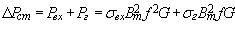

6.4.2.2. Магнитные потери в стали
Магнитный поток Ф(t) наводит ЭДС индукции не только в обмотке, но и в ферромагнитном сердечнике, а т. к. последний обычно электропроводен, то в нём возникают токи (рис. 6.34, а), называемые вихревыми или токами Фуко, и соответственно потери мощности , где sвх - коэффициент в Вт/кг, приводимый в справочниках; Bm - максимальная магнитная индукция в Тл, G - масса стали в кг. Вихревые токи бесполезно нагревают стальной сердечник (если не принять мер) до высоких температур.
Чтобы уменьшить потери от вихревых токов, стальные сердечники устройств, работающие при переменном токе частотой 50 Гц, изготавливают из пластин толщиной 0,35…0,5 мм, изолированных друг от друга (в результате чего эти токи замыкаются в каждой пластине (рис. 6.34, б)), а также для его изготовления используют специальные (электротехнические) стали с высоким электрическим сопротивлением. Изоляция пластин осуществляется с помощью лаков, реже – бумаги.
В измерительных устройствах и при более высоких частотах применяется более тонкая листовая электротехническая сталь, а также магнитодиэлектрики и ферриты.
Кроме этого при перемагничивании сердечника имеют место потери мощности Pг = на гистерезис. Для уменьшения потерь Pг от явления гистерезиса в электромагнитных устройствах переменного тока используют сталь с узкой петлёй гистерезиса.
Суммарные активные потери в сердечнике называют магнитными потерями в стали и определяют по формуле
. |
(6.19) |
|---|
Для многих материалов в качестве справочной характеристики приводят удельные потери (Вт/кг) на частотах 50, 400 Гц при значениях индукции 1 Тл и 1,5 Тл с указанием толщины ленты или листа. Например, р1.0;50 = 1,4 Вт/кг для стали марки 1512 и толщиной листа 0,5 мм. Удельные потери составляют от 0,6 до 4 Вт/кг в зависимости от марки стали и толщины листа при индукциях менее 1,5 Тл и достигают 8…13 Вт/кг для горячекатаных сталей при индукции В = 1,5…1,7 Тл.
Таким образом, реальная катушка со сталью потребляет активную мощность (энергию) из сети: незначительная её часть DPст = RI02 расходуется на нагрев обмотки, а основная часть DPст идет на нагрев ферромагнитного сердечника катушки, вызываемого вихревыми токами и явлением гистерезиса.